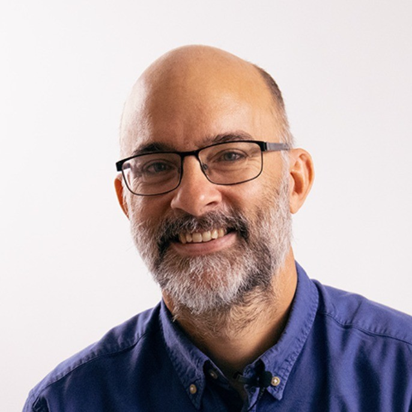

The OMOP School
A 3+1 Day OMOP CDM Bootcamp with hands-on training and workshop that turns your data harmonization vision into reality.
Course snapshot
Duration: • 3 full days (1.5-day intro + 1.5-day mini project) • + 1-day OMOP Use Cases Deep Dive (optional) - Workshop on some of the participants’ use cases.
Format: Live classroom training, live instruction, live coding, group exercises, and dedicated office hours
Outcome: Walk away with a working understanding of the OMOP Common Data Model (CDM), an actionable data harmonization plan, and the tools to execute it.
Date, Time, and Location
May 26th – 28th + May 29th (optional extra day)
Daily schedule: • 09:00-17:00 May 26th – 28th • 09:00-16:00 May 29th
Location: Stockholm, Sweden (venue TBD)
Learning Objectives
1. The OMOP Common Data Model: Learn to explain what the OMOP CDM is, what problems it resolves and how it can be applied
2. Federated Research: Gain an understanding of the role of standardization in federated research
3. Semantic Mapping: Learn to perform semantic mapping using the OMOP vocabularies
4. ETL Process: Gain an understanding of how to design and implement an OMOP ETL (Extract-Transform-Load) process
5. Data Quality Assurance: Learn how to evaluate and improve data quality
6. Data Analysis: Learn to conduct standardized observational analyses using OHDSI tools
7. Data Harmonization in Practice: Build experience in executing an end-to-end mini-harmonization project
8. OHDSI Methods & Tooling: Gain insights on how to use OHDSI methods and tools
For more details, read the course details further down on the page.
Course Roadmap
Day 1 (Morning & Afternoon): • OMOP Intro + OHDSI Toolset – theory, demos, and guided exploration
Day 2 (Morning): • OMOP Intro + OHDSI Toolset – theory, demos, and guided exploration
Day 2 (Afternoon): • Mini Harmonization Project – split into small teams, write, test, and debug ETL scripts
Day 3 (Morning & Afternoon): • Mini Harmonization Project – split into small teams, write, test, and debug ETL scripts
Day 4 (Optional): • Project Case Deep Dive– Discuss and apply lessons to your own use case, receive instant feedback.
Course Details
Who Should Attend?
This bootcamp is for organizations who: • Want to transform their health data assets into OMOP CDM and build Real World Evidence capabilities • Want to move from vision to practical implementation of OMOP CDM • Want to use OMOP-harmonized data for clinical development, research, policy development, health tech innovation • Want to join federated collaborative data and research networks
Hospitals, Regional Healthcare Authorities, Quality Registries/Registry Organizations, Research Institutions, Biobanks, National Authorities (connected to healthcare and/or health data), Health Data HealthTech Innovators.
Targeted roles to join: • Health Data Owners/Data Custodians • Data Scientists, Clinical Researchers & Epidemiologists • Health Data Warehouse Architects/ETL Developers/Health Informatics Specialists • Decision-Makers & Program Leaders (Digital Transformation Leads, Registry Directors, Health Data Strategists) • Healthcare Policy Stakeholders
If you have a use case for OMOP CDM, tell us at registration! We’ll tailor the workshop to meet your needs.
The OMOP CDM Bootcamp is primarily reserved to members of Swedish organizations. For international organizations interested in attending, please contact the training coordinator info@passion2improve.se.
What You Get
• 3 full days of in-person training incl. hands-on practice • All course materials (slides, notes, sample code) in a downloadable bundle • AWS training environment – 1 month of hands-on practice after the bootcamp • A 1-hour post-Bootcamp online follow-up Q&A session – to dive deeper or troubleshoot your use case • Community access – join the OHDSI network and keep the momentum going • A network of individuals in Sweden with interest to become OMOP CDM practitioners
Optional: • 1-day Deep Dive in participants’ use cases
Prerequisites
Must-have: • Laptop (Windows/Mac/Linux) • Good understanding of English
Nice-to-have: • Basic knowledge of observational health data • Scripting/programming experience (Python/SQL) • Willingness to collaborate in mixed skills groups
Note: • No prior OMOP CDM knowledge or experience required • No coding experience required • We will build you from the ground and up
The Bootcamp Team

Lars Halvorsen (Trainer)
• Computer scientist, expert in IT architecture and health data harmonization • 8+ years of experience in OMOP-CDM and data harmonization • Participated in over 25 projects leveraging the OMOP CDM for data harmonization in Europe and Africa • Delivered OMOP training programs for 5 years • Active member of OHDSI Belgium, OHDSI Africa

Freija Descamps (Trainer)
• Experienced data-scientist and Machine Learning specialist • 6+ years of experience in OMOP-CDM and data harmonization • Participated in over 20 projects leveraging the OMOP CDM for data harmonization in Europe and Africa • Delivered OMOP training programs for 5 years • Active member of OHDSI Belgium, OHDSI Africa ETL working group, and OHDSI microbiology working group

Christian Högberg (Coordinator)
• Health Data Entrepreneur • 25+ years of experience in leading change and data-driven improvement • Leads the Swelife/Vinnova-funded OMOP 4 Sweden initiative • Active in the work forming the national OHDSI node for Sweden • OHDSI Collaborator
Bootcamp Fees*
3-day OMOP CDM Bootcamp
• Non-profit organizations: 14.900 SEK
• For-profit organizations: 18.900 SEK
1-day OMOP Use Cases Deep Dive
• Non-profit organizations: 3.900 SEK
• For-profit organizations: 4.900 SEK
*All prices are excl. Swedish VAT (moms).
Cancellation Policy
You may cancel your booking for the 3+1-Day OMOP CDM Bootcamp – The OMOP School by notifying us in writing. You will receive the % of refund based on the period of notice received as follows:
• ≥ 60 days before 1st day of training: 100%
• 30-59 days before 1st day of training: 50%
• < 30 days before 1st day of training: 0%
Training Providers
Passion 2 Improve Sverige AB (Organizational ID: 559108-9833) Bastuvägen 51, 138 36, Sweden NV edenceHealth (Organizational ID: BE0719961021) Veldkant 33A, B-2550 Kontich, Belgium.